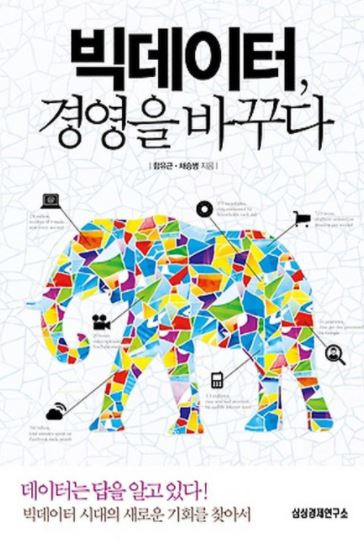

About Big data
모두 거짓말을 한다
지은이: 세스 스티븐스 다비도위츠 | 페이지 360
이 책은 인터넷 데이터 전문가인 세스 스티븐스 다비도위츠가 빅데이터가 사람의 심리를 엿볼 방법임을 소개하고, 빅데이터 분석을 통해 사람들의 솔직한 생각을 도출해 낸 내용을 담았다. 또한, 21세기 사회과학의 새로운 길을 정의한다.
빅데이터가 더욱더 중요해지면서 빅데이터를 취급하는 것에 더욱 주의를 기울여야겠다는 것을 느꼈다. 빅데이터를 악용할 수 있는 사례로는 카지노가 있다. 카지노에서는 "페인 포인트"가 있는데 각자 페인 포인트는 다르다. 카지노 입장에서는 고객들로부터 많은 자산을 얻는 것이 목적이지만, 고객 유지는 해야 한다. 만약 한 고객이 300포인트가 있다면 299포인트를 카지노가 얻고, 1포인트가 남았을 때 카지노를 벗어나게 해 고객이 다시 찾을 수 있도록 유도해야 한다. 하지만 각각의 포인트가 다르기 때문에 조치가 애매하다. 이를 위해서 빅데이터를 사용해 고객의 신원을 조사하여 페인 포인트를 예상해 고객별로 대응하는 것이 유리하다. 하지만 이러한 방법은 사생활 침해의 위험이 있고, 윤리적이지 못하다.
이를 통해서 기업의 이익을 위해 빅데이터를 악용해 문제가 발생할 수도 있다는 것을 알았다. 우리에게 좋은 점만 가져다준다고 생각했던 빅데이터가 양날의 칼로 작용할 수 있음으로, 사용에 유의해야 한다고 느꼈다. 또한, 빅데이터 사용에 대한 규범이 명확히 정해져야 하며, 올바른 사회과학의 방향에 대해 고민해 봐야 한다고 생각했다.
빅데이터, 경영을 바꾸다

지은이: 함유근, 채승병 | 페이지 328
이 책은 최근 이슈가 되고 있는 빅데이터를 정확하게 이해하기 위한 설명과 빅데이터의 등장으로 기업경영에 가져온 변화를 다양한 관점에서 살펴본다. 또한, 우리나라 사업의 문제점을 빅데이터와 관련하여 이야기하고 있다.
빅데이터를 제대로 활용하려면 기업 현장에서 데이터 축적이 원활히 이루어져야 한다. 그리고 축적된 데이터에서 가치를 뽑아내고자 하는 노력이 다각도로 이루어지면서, 실질적으로 업무 효율이 향상되고 새로운 비즈니스가 창출돼야 한다. 한국의 기업 현장에서는 이러한 선순환 구조가 부족하다. 한국 경영자들은 인지 스타일 점수가 세계 평균보다 높다. 하지만 한국의 경영자 집단은 분석적 성향이 강할수록 심리적 오류를 더 자주 범하는 모습을 보였다. 한국 경영자들은 미리 자신이 특정한 방향으로 결론을 내려놓고, 합리화하는 수단으로 데이터를 이용한다. 데이터를 수단으로 사용하는것이었다. 또한 데이터를 일회성으로 사용한다.
이를 통해서 빅데이터를 수단으로 사용하는 것이 아니라 데이터를 바탕으로 분석하며 결정을 내려야겠다고 생각했다. 또한, 데이터를 일회성으로 사용하는 것이 아니라, 분석 후에도 정리하면서 당시 판단이 옳았는지, 더 나은 대안은 없었는지 다시 한번 점검해봐야 한다는 것을 깨달았다. 데이터를 통한 분석기술도 중요하지만, 그 속에서 유용한 정보를 도출해 낼 수 있는 능력을 증진해야 겠다고 다짐했다.